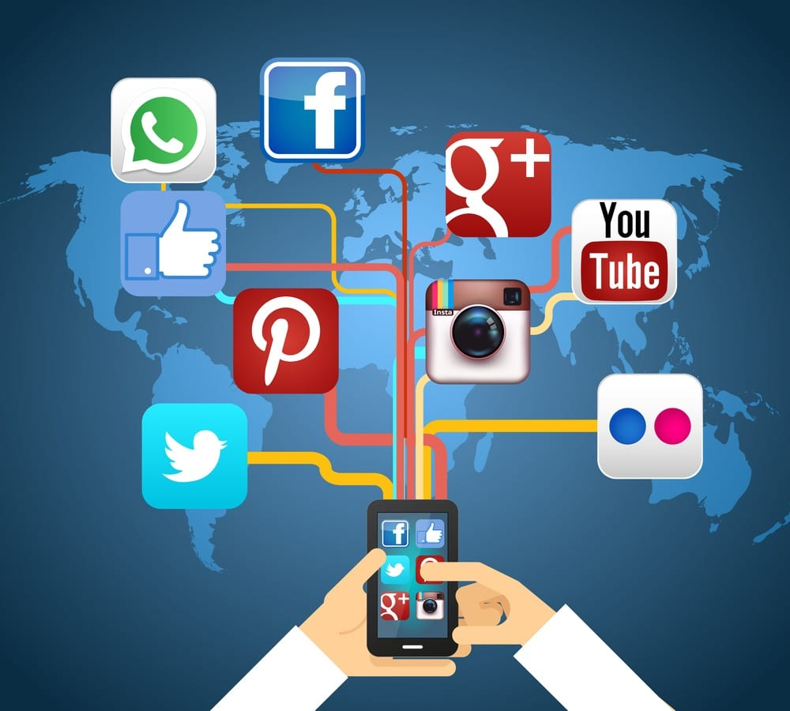

DESVENTAJAS
Las redes sociales presentan desventajas significativas como adicción, problemas de salud mental (ansiedad, depresión, baja autoestima), ciberacoso y pérdida de privacidad. También fomentan la desinformación, la comparación social constante, el aislamiento real y la disminución de la productividad.
Salud Mental y Emocional
Adicción y pérdida de tiempo: El diseño de las plataformas incentiva el uso excesivo y compulsivo, generando dependencia.
Problemas de autoestima: La comparación constante con vidas idealizadas y cuerpos irreales genera insatisfacción, ansiedad y depresión, especialmente en jóvenes.
FOMO (Fear of Missing Out): El "miedo a perderse algo" provoca ansiedad por la necesidad de estar conectado constantemente.
Ciberacoso (Bullying): Son un vehículo para acoso,insultos y difamación, impactando la salud mental.

Privacidad y seguridad
Pérdida de privacidad: La exposición de datos personales e intimidad es un riesgo constante, a menudo por configuración o uso excesivo.
Robo de identidad y fraudes: Facilita la suplantación de identidad, estafas y el robo de información bancaria o personal.
Virus y malware: Son canales para la distribución de software malicioso.